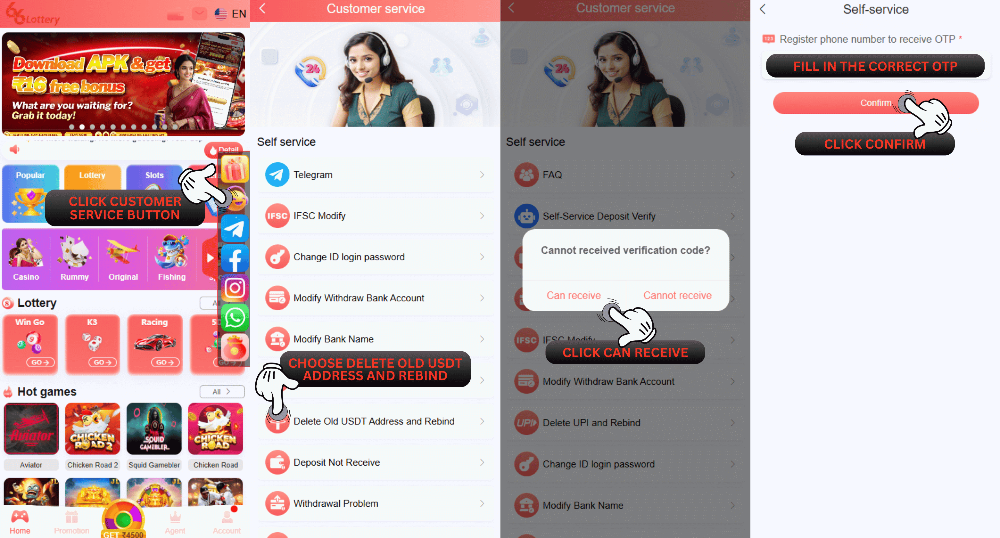

पुराना USDT पता हटाएँ और पुनः बाइंड करें
प्रश्न: मैं स्वयं-सेवा केंद्र 66 Lottery पर पुराने यूएसडीटी पते को हटाने और रीबाइंड करने के बारे में समस्या कैसे प्रस्तुत कर सकता हूं?
उ: पुराने यूएसडीटी पते को हटाएं और स्वयं-सेवा केंद्र 66 Lottery पर रीबाइंड सबमिट करने के लिए, कृपया इस चरण का पालन करें
1. आपको इस लिंक https://www.66lottery.vip/
का उपयोग करना होगा
2. लिंक डालने के बाद नोटिफिकेशन को बंद कर दें
3. समस्या का चयन करें और पुराना यूएसडीटी पता हटाएं और रीबाइंड चुनें
4. अपना 66 Lottery ID अकाउंट भरें
5. स्पष्ट एवं विस्तृत पहचान पत्र धारण करते हुए फोटो सेल्फी संलग्न करें
6. यूएसडीटी पता स्पष्ट और विस्तृत रखते हुए फोटो सेल्फी संलग्न करें
7. जमा रसीद प्रमाण स्पष्ट और विवरण संलग्न करें
8. सबमिट इश्यू बटन दबाएं

स्थिति संबंधी समस्या
प्रश्न: मैं अपनी स्थिति संबंधी समस्या की जांच कैसे करूं, पुराना यूएसडीटी पता हटाएं और स्वयं-सेवा केंद्र 66 Lottery पर रीबाइंड करें?
उत्तर: आप चेक इश्यू स्टेटस को दबाकर स्टेटस इश्यू की जांच कर सकते हैं, फिर अपना 66 Lottery आईडी खाता भरें और पुराने यूएसडीटी एड्रेस को हटाएं का चयन करें और अंत में खोजने के लिए रीबाइंड पर क्लिक करें और यह आपके इश्यू की स्थिति दिखाएगा
सफलता की स्थिति
प्रश्न: मैं पहले से ही जांच कर रहा हूं और यहां स्थिति पहले से ही सफल है और एक नोट है पास - सफलता "यूएसडीटी पता सफलतापूर्वक हटा दिया गया" इसका क्या मतलब है?
उ: इसका मतलब है कि 66 Lottery वित्त विभाग आपके खाते से जुड़े यूएसडीटी पते को हटाने में सफलतापूर्वक मदद करता है और आपको केवल निकासी मेनू पर जांच करने और नए यूएसडीटी पते को दोबारा जोड़ने की जरूरत है
स्थिति अस्वीकार करें
प्रश्न: स्टेटस रिजेक्ट के बारे में मुझे यह जानने की जरूरत है कि क्या मेरे पुराने यूएसडीटी एड्रेस को डिलीट करने और रिबाइंड करने के मुद्दे को 66 Lottery वित्त विभाग द्वारा रिजेक्ट कर दिया गया है?
उ: ठीक है निश्चिंत रहें हम आपको यह समझाने में मदद करेंगे कि कुछ नोट अस्वीकृति हैं जिन्हें आपको जानना आवश्यक है हम इस पर नीचे स्पष्टीकरण देंगे：
1. "आवश्यकता सबमिट की गई गलत" को अस्वीकार करें: इसका मतलब है कि आपको आवश्यकता के साथ उसी मुद्दे को फिर से सबमिट करने की आवश्यकता है, सभी सही प्रदान करें, कुछ या सभी डेटा गलत हो सकते हैं
2. अस्वीकार करें "आवश्यकताएं स्पष्ट नहीं हैं": इसका मतलब है कि सभी डेटा आवश्यकताएं धुंधली हैं या स्पष्ट नहीं देखी जा सकती हैं, कृपया सभी को स्पष्ट और विवरण के साथ फिर से सबमिट करें
3. अस्वीकार करें "पूरी जानकारी सबमिट करें ताकि हम जांच कर सकें": इसका मतलब ठीक है। विन वित्त विभाग जांचें कि कुछ या सभी आवश्यकताएं पूरी नहीं हैं और आपको सभी प्रदान की गई समान समस्या को फिर से सबमिट करना होगा